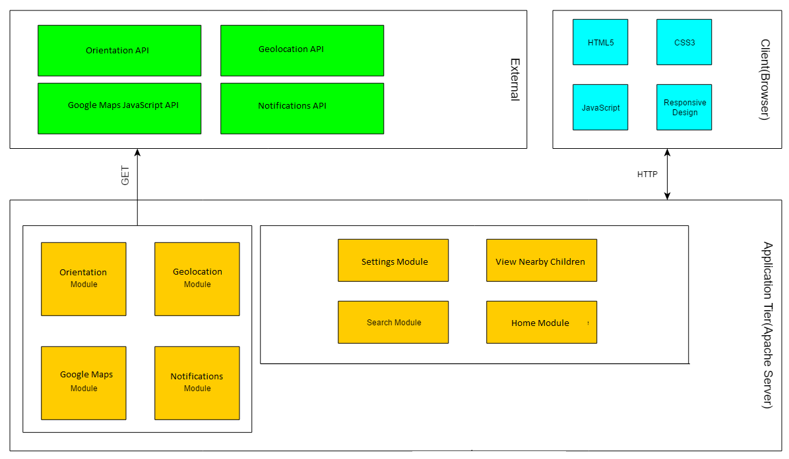

Kido
Kido permite monitorizarea copiilor ȋn timp real și notificarea acestuia la evenimente de interes utilizatorului, bazat pe setările sale. Informațiile ce stau la baza aplicației se obțin prin senzori de geolocalizare. Kido asigură părinții că copii lor nu au părăsit siguranța casei, permițându-le acestora să ȋși trăiască viața fără să se ȋngrijoreze de copii lor.
Sistemul Web permite monitorizarea unuia sau mai multor copii bazat pe distanța acestuia sau acestora față de unul sau mai multe puncte specificate de utilizator sau coordonatele unor persoane specificate. Distanța este specificată de utilizator. Utilizatorul va trebui să seteze senzorii pentru copii și persoanelor detectabile de aplicație.
Tehnologii folosite
În implementarea aplicației vor fi utilizate diferite API-uri pentru emularea și utilizarea senzorilor, notificări și hărți. Acestea se vor folosi ȋmpreună cu JavaScript, ca limbaj de progamare, și Oracle, pentru baza de date.
JavaScript
JavaScript (JS) este un limbaj de programare orientat obiect bazat pe conceptul prototipurilor. Este folosit mai ales pentru introducerea unor funcționalități în paginile web, codul Javascript din aceste pagini fiind rulat de către browser. Cea mai des întâlnită utilizare a JavaScript este în scriptarea paginilor web. Programatorii web pot îngloba în paginile HTML script-uri pentru diverse activități cum ar fi verificarea datelor introduse de utilizatori sau crearea de meniuri și alte efecte animate. Vom folosi JavaScript pentru ferestre de tip popup,slideshows si pentru a accesa serviciile oferite de platformele pe care le integram. Aceste platforme ne pun la dispozitie diverse API-uri (Application Programming Interface) , pe care le vom folosi pentru a integra continutul deja existent pe platformele mentionate,in aplicatia noastra.
Geolocation API
API-ul Geolocation definește o interfață de nivel ȋnalt pentru informații despre locație asociate cu dispozitivul unde se află implementarea, precum latitudinea și longitudinea. API no cunoaște de unde vin aceste informații. Surse comune includ Sistemul de localizare globală (GPS) și locația dedusă din semnale de rețea precum adresa IP, RFID, WiFi și adresele MAC prin Bluetooth, și ID-urile GSM/CDMA ale telefonului, precum și input-ul utilizatorului. API-ul nu garantează că returnează adevărata locație a dispozitivului.
În aplicație se va utiliza pentru preluarea datelor de la senzorii de localizare și emularea acestora.
Screen Orientation API
API-ul Screen Orientation oferă abilitatea de a citi tipul de orientare a ecranului și unghiul, detectarea schimbării orientării ecranului și abilitatea să blocheze orientarea ecranului.
API-ul va fi utilizat pentru emularea accelerometrului pentru detectarea coliziunilor și preluarea datelor de la senzori.
Google Maps JavaScript API
Google Maps este un serviciu de mapare pe web dezvolotat de Google. Oferă imagine din satelite, hărți stradale, vizualizări panoramice ȋn 360°(Street View), condiții de trafic ȋn timp real (Google Traffic), și găsirea unei rute pentru traversa pe jos, cu mașina, cu bicicleta sau transport public. API-ul oferă posibilitatea de folosi acest serviciu prin JavaScript.
În aplicație Google Maps va fi folosit pentru vizualizarea locației copiilor.
Notifications API
API-ul Notifications permite paginilor web să controleze afișarea notificațiilor de sistem utilizatorului, se pot afișa chiar dacă utilizatorului a schimbat tab-ul sau utilizează altă aplicație. API-ul este proiectat să fie compatibil cu sistemele de notificare existente pe mai multe platforme.
API-ul va fi utilizat pentru transmiterea notificărilor.
Arhitectura
Aplicația va fi una multi-page, adică, in funcție de acțiunile utilizatorului browser-ul va naviga către altă pagină . În continuare vom descrie paginile aplicației:
-
Homepage
Pe Homepage ȋn stânga ,dacă utilizatorul este logat și au fost setați senzorii ce redau poziția copilului, se va afișa poziția copilului sau copiilor prin Google Maps ȋmpreună cu punctele specificate de utilizator ȋmpreună cu distanța copilului cel mai ȋndepărtat de ele și locația persoanelor specificate ȋmpreună cu distanța copilului cel mai ȋndepărtat de ele, altfel dacă nu sunt setați senzorii afișează un mesaj ce cere utilizatorului să ȋi seteze iar dacă nu este logat se cere logarea sau ȋnscrierea utilizatorului. În dreapta opțiuni de schimbare a setărilor, de adăugare a altor puncte și vizualizarea altor copii din apropiere, aceast meniu va fi păstrat pe toate paginile.
În dreapta se vor afișa butoane ce redirecționează spre pagina de schimbare a setărilor și de vizualizare a altor copii din apropiere ȋmpreună cu un formolar și buton pentru adăugarea altor puncte , aceast meniu va fi păstrat pe toate paginile.

-
Login
Pe pagina de login apare un form unde se poate ȋnscrie E-mail-ul și parola pentru logare și un buton pentru redirecționare spre pagina de signup.

-
Sign-up
Această pagina prezintă formularul de ȋnregistrare pe site. Utilizatorul va trebui să furnizeze urmatoarele informații :
- Nume
- Prenume
- Parolă
- Confirmarea Parolei

-
Settings
Pe pagina de setări se vor afișa formulare pentru inroducerea datelor necesare setării senzorilor și date despre cine detectează acești senzori (Nume, tip: copil sau adult) și schimbarea numărului de metri necesari declanșării unei notificări, va fi setat default pe 150.

-
Nerby children
Pagina afişează o hartă cu copii la distanţă de 100 de metri sau mai puţin de copilul vizualizat.

Detalii de implementare
Modelarea datelor
Pentru stocarea datelor se va utiliza baza de date Oracle structurată în felul următor:
- Un tabel denumit Persoane ce va conţine date despre persoane precum nume, prenume, data naşterii şi un id unic alocat la indroducera sa în baza de date.
- Un tabel denumit Senzori ce va conţine date despre senzori şi id-ul persoanelor ataşate senzorilor, fiecare senzor va primi un id unic alocat la indroducera sa în baza de date.
- Un tabel denumit Utilizatori ce va conţine date despre utilizator: nume, prenume e-mail, parolă şi un id unic alocat la crearea utilizatorului.
- Un tabel Alocare ce face legătura dintre Utilizatori şi Senzori, conţine id senzor şi id utilizator.
Use case-uri
La intrarea în site se vor accesa cookie-uri şi dacă se obţine date pentru email şi parolă care corespund celor din baza de date se logează utilizatorul şi se redirecţionează spre Homepage altfel spre pagina de Login.
La signup se verifică dacă existe câmpuri necompletate şi dacă parolele se potrivesc, dacă există câmpuri necompletate sau parolele nu se potrivesc se afişează un mesaj sau mesaje de eroare, altfel datele sunt verificate să nu fie introdusă deja în baza de date adresa de email, dacă este deja în baza de date se afişează un mesaj de eroare altfel se generează un id pentru utilizator şi se introduc datele acestuia în baza de date.
La cererea copiilor din jur verifică baza de date pentru copii din jur şi îi adaugă pe hartă pe cei ce sunt îndeajuns de aproape apoi afişează harta.
Verificarea poziţiei copilului/copiilor se face prin accesarea Homeage-ului, unde se preiau datele despre setările senzorului se folosesc funcţiile din Geolocalizare şi Google Maps pentru a afişa o hartă cu poziţia copilului/copiilor şi poziţiile punctelor şi persoanele specificate de utilizator.
Adăugarea unui nou punct se face prin completarea formularului de pe panoul din dreapta.
Distribuire Sarcini
-
Iacob Andrei
- Baza de date
- Find kids
- Settings
- Geolocationation
- CSS
-
Moisii Cosmin
- Signup
- Login
- Set senzor
- Notifications
- Screen Orientation
- Google Maps
Planificare
-
Saptamana 10
- familiarizarea cu framework-ul JavaScript
- scheletul principal al aplicatiei
- primele module: login si signup
-
Saptamana 11
- simulare senzori
-
Saptamana 12
- interactiunea cu API-urile
- gestiunea fisierelor de pe server
-
Saptamana 13
- implementarea bazei de date
-
Saptamana 14
- foi de stiluri
- responsiveness
- testare